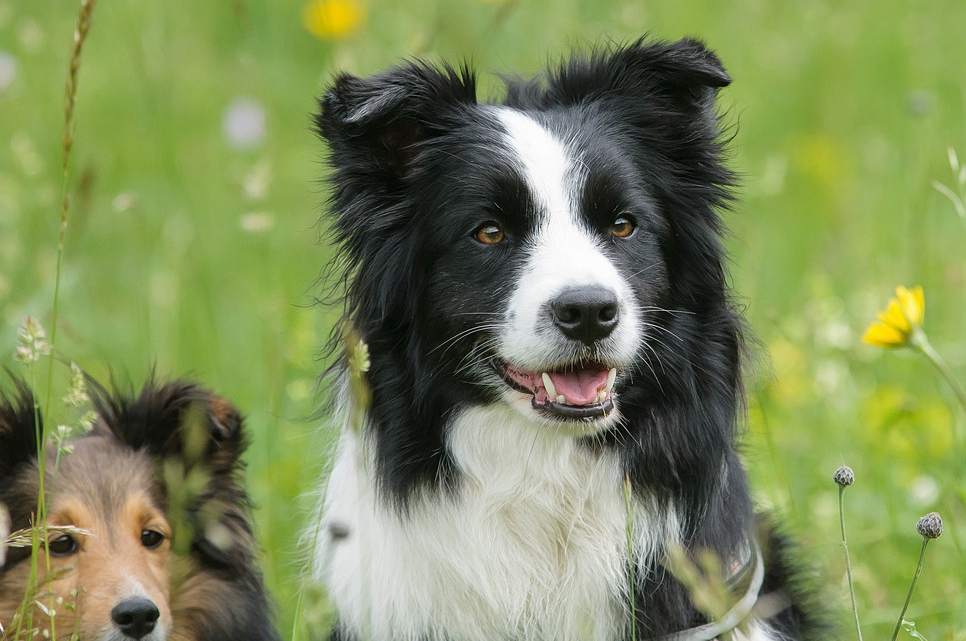
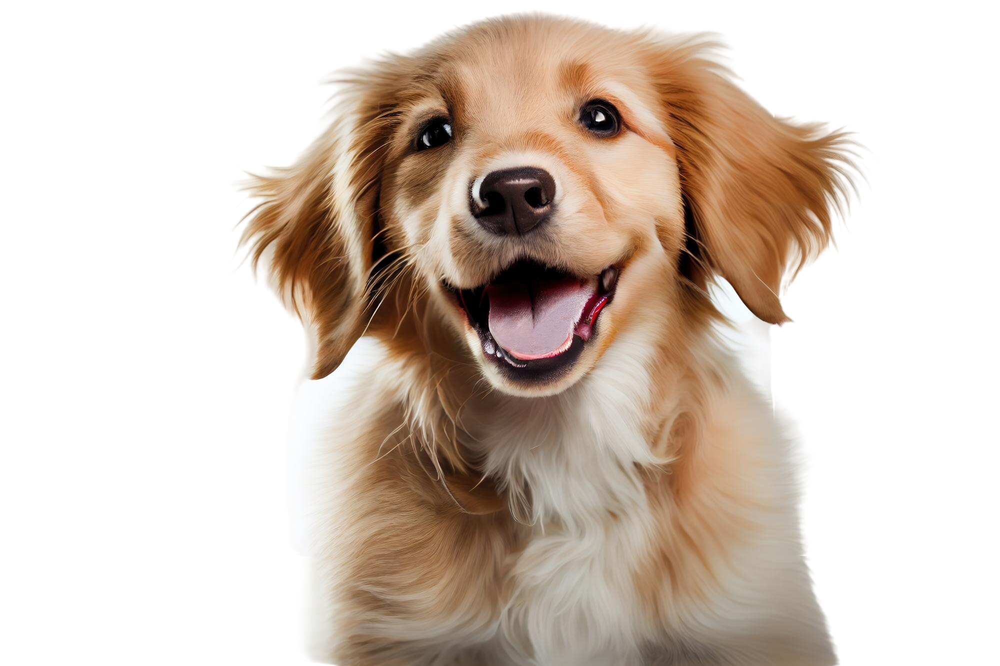
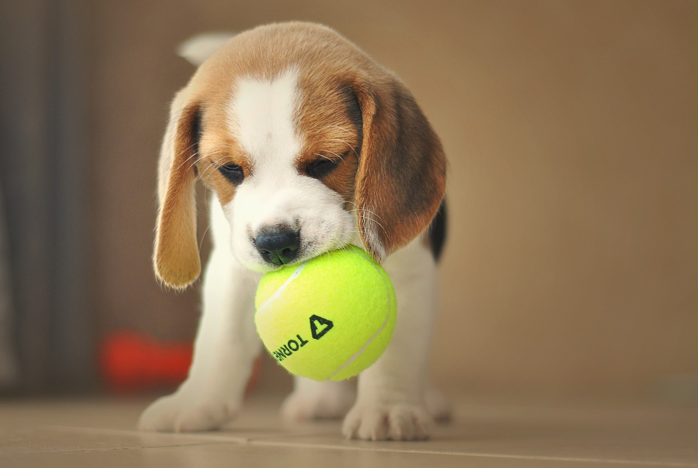
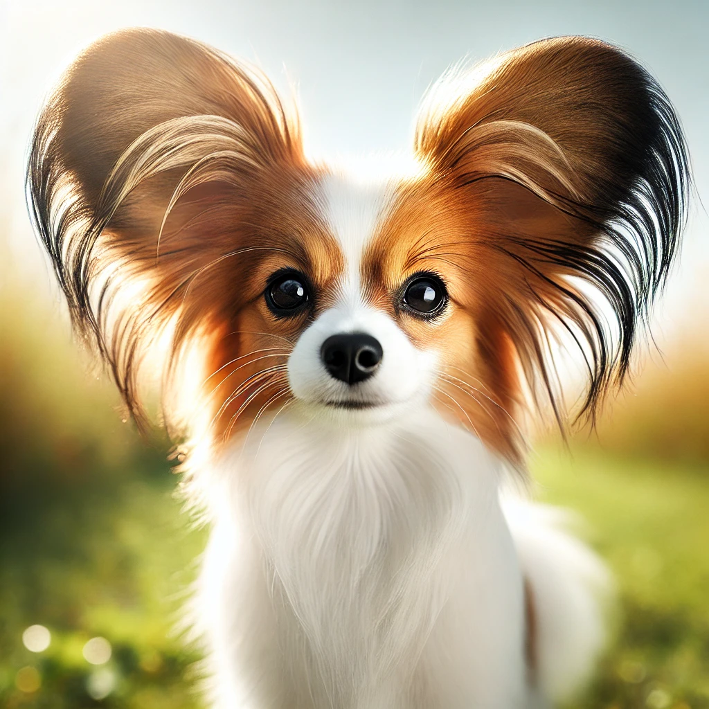
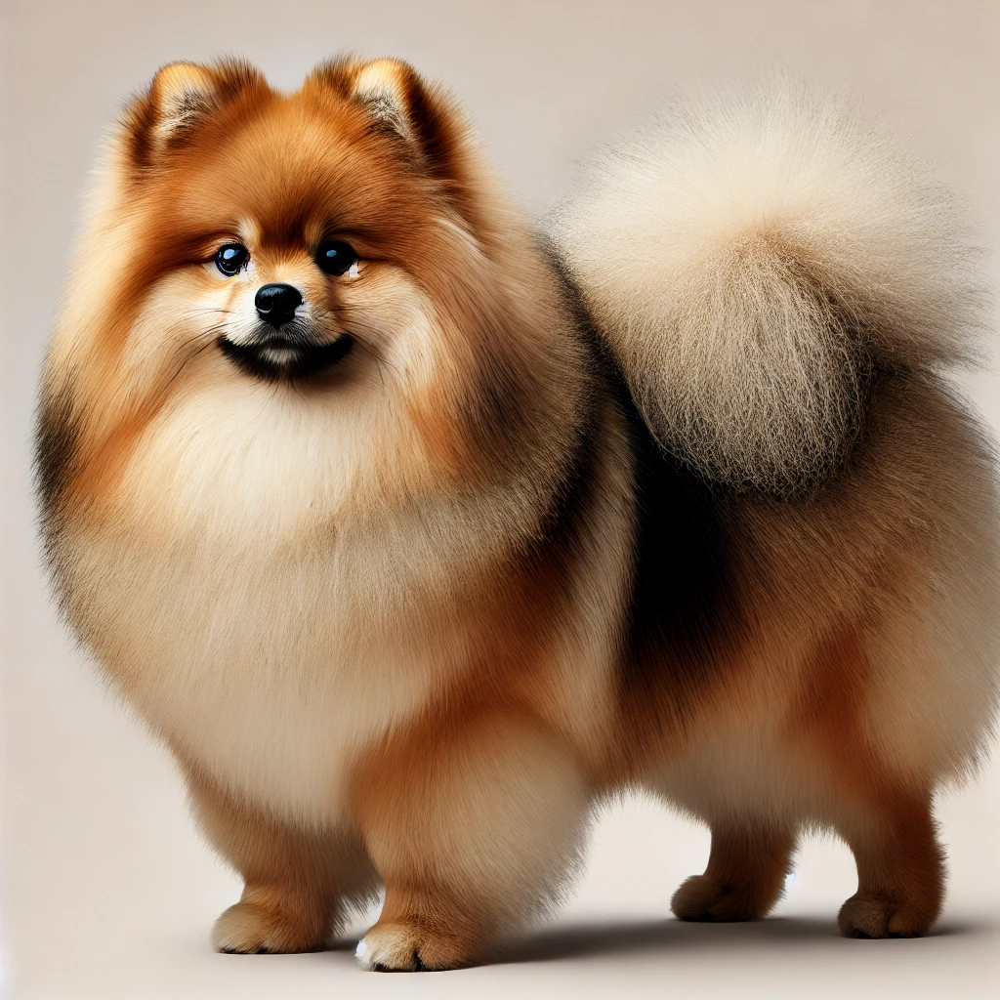
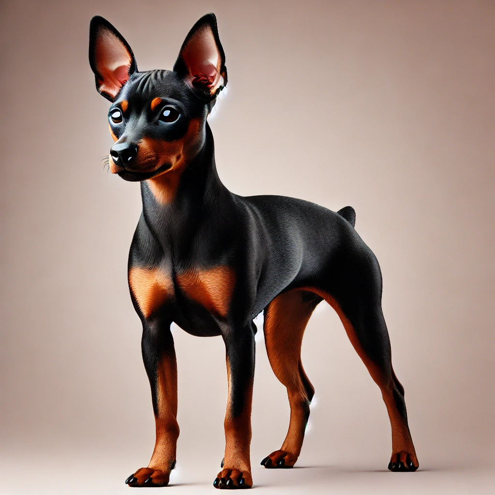

Cães
Cães e seres humanos compartilham uma relação única e profunda que transcende o tempo. Essa convivência amistosa é marcada por lealdade, carinho e uma comunicação silenciosa que fortalece os laços entre ambos. Os cães nos ensinam sobre empatia, confiança e alegria nas pequenas coisas, enquanto nós lhes oferecemos cuidado, proteção e amor incondicional. Juntos, construímos uma parceria harmoniosa que enriquece a vida de todos os envolvidos, celebrando a verdadeira amizade entre espécies.

Border Collie
Os Border Collies são conhecidos por sua inteligência extraordinária e habilidade de trabalho, sendo frequentemente citados como a raça de cães mais inteligente do mundo. Originários da região de fronteira entre Escócia e Inglaterra, foram desenvolvidos para pastorear ovelhas e demonstram um notável foco e energia em suas tarefas. Caracterizam-se por seu pelo de comprimento médio que pode ser liso ou ondulado e por uma variedade de cores e padrões. Esses cães são altamente energéticos, precisam de muito exercício e estimulação mental para evitar comportamentos destrutivos.

Labrador Retriever
Labradores são uma das raças mais populares em muitos países, conhecidos por seu temperamento amigável e natureza cooperativa. São cães robustos e bem proporcionados, com uma pelagem densa e resistente à água, ideal para o trabalho que historicamente desempenhavam como ajudantes de pescadores na região do Labrador, no Canadá. Eles vêm em três cores: preto, chocolate e amarelo. Labradores são conhecidos por serem ótimos companheiros de família e são frequentemente usados em papéis como cães-guia devido à sua natureza obediente e adaptável.

Beagle
Os Beagles são pequenos a médios cães de caça com uma expressão simpática e orelhas grandes e caídas. Eles têm um faro incrivelmente aguçado e foram originalmente criados para caça menor, como coelhos. A pelagem do Beagle é geralmente de baixa manutenção, curta, densa e resistente às intempéries, e eles são mais comumente vistos em combinações de branco, preto e marrom. Apesar de sua independência e teimosia ocasional, os Beagles são extremamente sociáveis e se dão bem com crianças e outros cães, tornando-os animais de estimação familiares ideais.

Papillon
O Papillon é facilmente reconhecido por suas orelhas grandes e em forma de borboleta, das quais seu nome francês "papillon" (borboleta) é derivado. Esta raça pequena mas valente tem uma longa história como cão de colo da nobreza europeia. O Papillon possui um pelo longo e sedoso que não forma subpelo, com uma juba impressionante ao redor do pescoço e uma cauda emplumada que curva sobre o dorso. Eles são notáveis por sua agilidade e habilidades em obediência, sendo cães altamente alertas e inteligentes que respondem bem ao treinamento. Apesar de seu tamanho pequeno, têm uma personalidade vibrante e podem ser bastante assertivos.

Spitz Alemão
Também conhecido como Lulu da Pomerânia (em sua variante menor), o Spitz Alemão é um cão de porte médio, com pelagem densa e fofa, focinho delicado e orelhas pequenas e pontiagudas. São inteligentes, afetuosos e cheios de energia, sendo excelentes cães de companhia. Sua aparência é semelhante à de uma raposa, e sua cauda é enrolada sobre o dorso. São ótimos companheiros e muito leais.

Pinscher
O Pinscher é um cão pequeno, ágil e musculoso, com pelagem curta e brilhante. De origem alemã, essa raça é corajosa, alerta e muito protetora, apesar de seu tamanho compacto. Seu corpo é esguio e quadrado, e suas orelhas pontiagudas são uma marca registrada da raça.